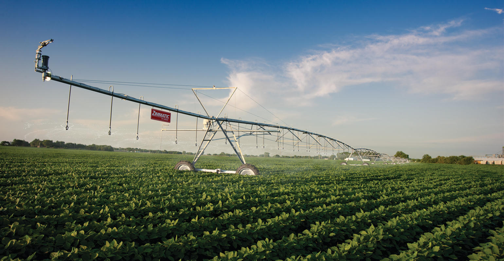
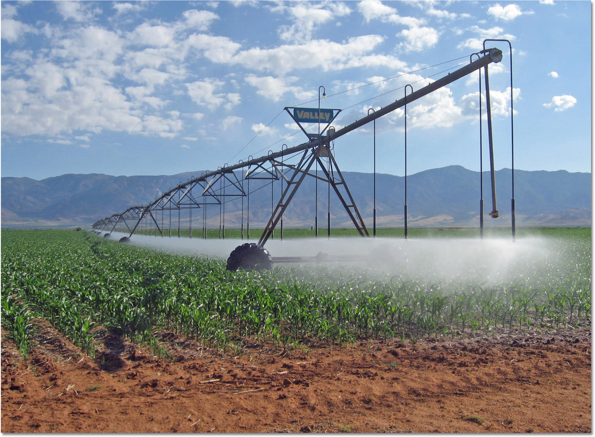
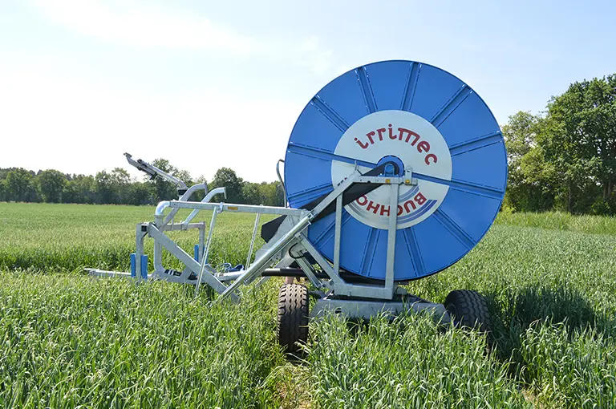
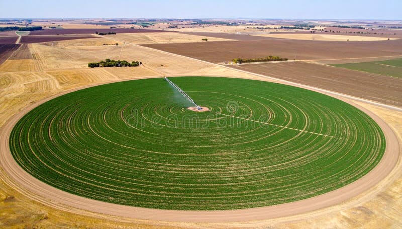

Open crops
Wheat, maize, potatoes under a circling machine. Different millimetres on different parts of the circle when the machine can do that.
Smart farming · Agritech · Water
The farm sets the monthly water. The system plans millimetres per field. You only hear if a rule breaks.

Vairrigation watches the crop from space and the weather on the ground, then says how many millimetres each field still needs — inside the water you are allowed this month.
A circling machine, a hose reel, or pipes at the tree. We do not sell steel.

Wheat, maize, potatoes under a circling machine. Different millimetres on different parts of the circle when the machine can do that.

The German default. One depth for the run, planned from the same water tank and the same crop need.

Fruit and dates on drip. The map is rows, not a circle. The question is the same: where does tonight’s water still pay.
What a manager should answer before breakfast: how much water the month still holds, what each field already drank, what to do tonight.
of 12 000 m³ farm water
| Field | Water put on | Action |
|---|---|---|
| Field 1 | 1 250 m³ · 12 mm | Water tonight |
| Field 2 | 2 340 m³ · 22 mm | Hold — rain |
| Field 3 | 630 m³ · 6 mm | Survival 6 mm |
| Field 4 | 210 m³ · 2 mm | Needs water |
| Field 5 | 1 150 m³ · 11 mm | Stop — share used |
One field you already water. One month. Then you keep it, change it, or stop. No new pipes.
Crop, sowing date, how you water now, how much water the month allows.
Two short notes a week: water left, water already on, plan for the next two nights.
If the plan is wrong twice, we change the numbers with you on the phone.
Water used. Water still in the month. Your call.
Success is the same crop with less water — or the same water with fewer surprises — without emptying the month before day 20.
Europe pays farmers, not software firms. You apply in your country. A meter and a likely water saving are usually required. In Germany often 20–40% of eligible kit.
Ask for the one-pagerFifteen minutes, twice a week. You can ignore any night. We still want to hear that you did.
Talk about a test